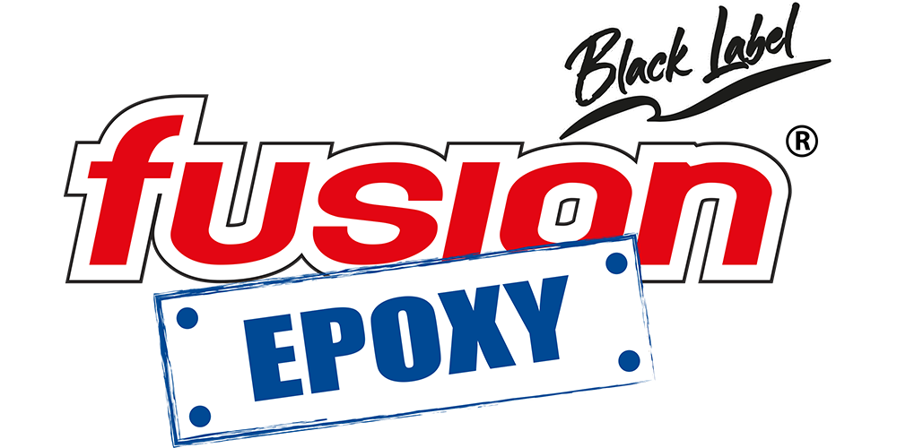
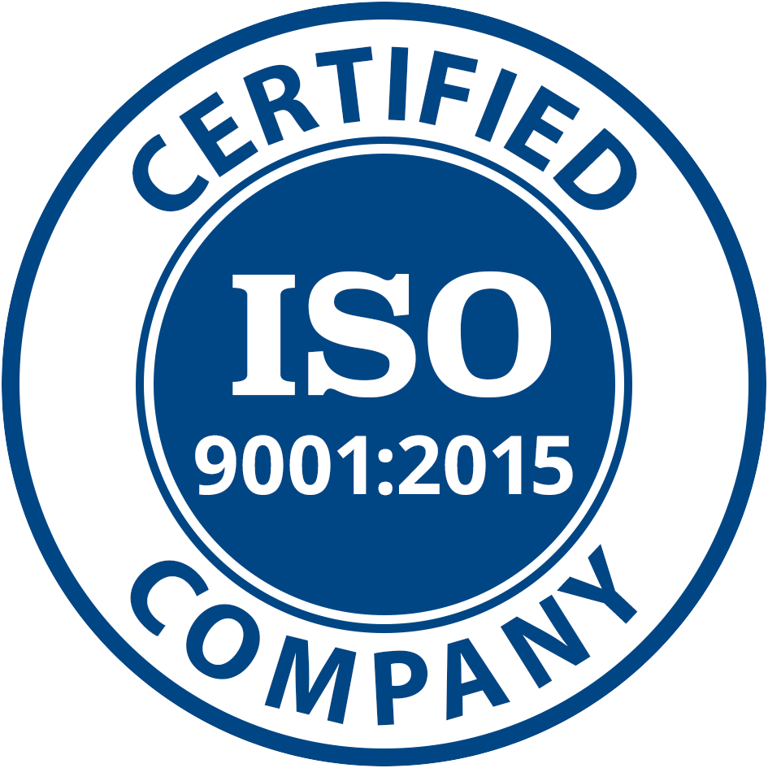

Over 50 professional-grade epoxy products. Trusted by Lowe's, Walmart, Home Depot & Ace Hardware. Now expanding distribution to European and global markets.

At Fusion Polymers we are committed to developing and supplying high-quality epoxy systems, meeting our customers' requirements as well as the applicable technical, regulatory and legal requirements, through the use of high-quality raw materials.
We drive continuous improvement of our processes, strengthening the competence of our personnel to ensure the reliability of our products and customer satisfaction.

Empresa Certificada ISO 9001:2015Fill out the form and our international sales team will contact you within 24 business hours.
Your inquiry has been received. Our international sales team will contact you within 24 business hours.